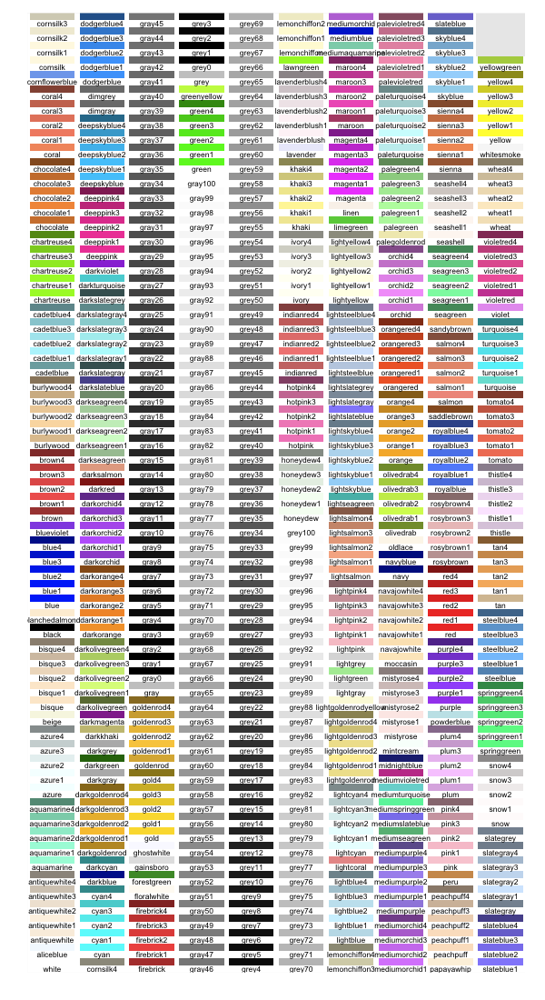
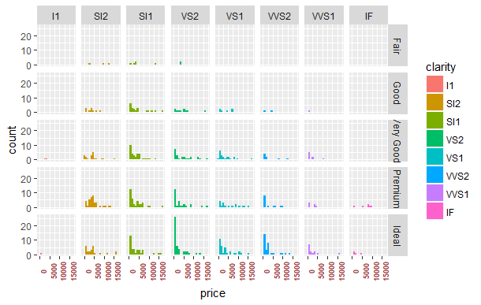
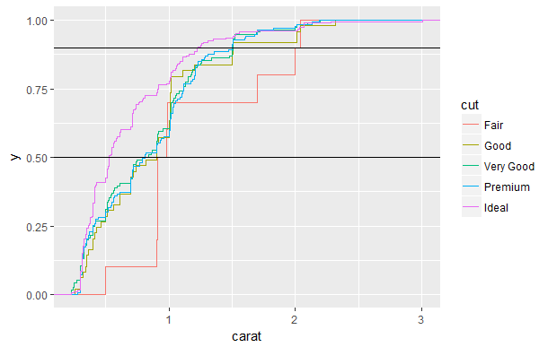

CHAPTER 5 DATA VISUALIZATION pp. 97 - 204
(5.1) DATA VISUALIZATION p. 98
(5.1.1) Introduction p. 99
(5.1.2) Visualization Concepts p. 106
(5.2) THE GRAMMAR OF GRAPHICS p. 108
(5.2.1) Visualization of a Single Continous Variable using Histograms p. 117
(5.2.2) Histograms of a Single Continous Variable by a Categorical Variable p. 129
(5.2.3) Visualization of a Single Continous Variable using Density Plots p. 140
(5.2.4) Density Plots of a Single Continous Variable by a Categorical Variable p. 145
(5.2.5) Visualization of a Single Continous Variable using Superimposted Histogram and Density Plot p. 156
(5.2.6) Visualization of a Single Discrete or Categorical Variable p. 157
(5.2.7) Visualizations of Relationships Between Two Variables - One Continuous, One Categorical p. 162
(5.2.8) Visualizations of Relationships Between Two Variables - Both Continuous p. 180
(5.2.9) Heat Maps p. 200
(5.2.10) Correlations p. 203
(5.2.11) Visualizations of Relationships Between Three Variables p. 205
Ch. 5 requires the following R packages:
ggplot2
corrgram
plotly
scatterplot3d
DATA VISUALIZATION
DATA VISUALIZATION
Prepare Data
Importing Data
Data Verification
Data Summarization
Data Visualization
Data Cleaning
Feature Selection
Data Transforms
Evaluate Algorithms
Resampling Methods
Evaluation Metrics
Spot-Check Algorithms
Model Selection
Improve Results
Algorithm Tuning
Ensemble Methods
Present Results
Finalize Model
Make New Predictions
"The greatest value of a picture is when it forces us to notice what we never expected to see” John W. Tukey, statistician and scientist
“Data visualization is the representation and presentation of data that exploits our visual perception abilities in order to amplify cognition” Andy Kirk, data visualization architect
http://www.allanalytics.com/author.asp?section_id=1411&doc_id=260370
Andy Kirk presents four objectives for data visualization:
Strive for form and function. This objective, like data visualization itself, isn't new. But applied here, this is about grabbing people's attention aesthetically, and then once they're on board, provide something functional -- something "that makes people feel like they've learned something,"
Seek to create accessibility into a subject through design that is as intuitive as possible. What we want to do is focus on the clarity because some things are inherently complex. Sometimes the way we portray data is unusual and different, but we need to trust the fact that people can learn these things, that they can learn how to decode these portrayals of data. And what we're trying to do is create a portrayal of the subject matter that really captures the essence of that data, that data framework, and the story that we're trying to tell, which sometimes means things aren't necessarily instant. But as long as we keep in mind that people need to root into our subject, through clarity and accessibility of design, that is something that makes success
Be confident in the ability to justify the inclusion, exclusion, and deployment of every design property used; sometimes, visualizations simply aren't necessary
Never deceive the receiver. This is about the ethics of data visualization. Plain and simple: Don't distort the truth, even if the numbers you're portraying are hardly world-changing
Introduction
Data visualization is not a new concept. There are two very notable examples of the historical importance of data visualization. Probably one of the best statistical graphics ever drawn was by Charles Joseph Minard in 1869 and portrays the losses suffered by Napoleon's army in his Russian campaign of 1812. Beginning at the Polish-Russian border, the thick band shows the size of the French Army at each position during their advance. The path of Napoleon's retreat from Moscow in the bitterly cold winter is depicted by the dark lower band, which is tied to temperature and time scales. https://www.edwardtufte.com/tufte/posters
It displays six types of data in two dimensions: the number of Napoleon's troops; the distance traveled; temperature; latitude and longitude; direction of travel; and location relative to specific dates.
This graphic can be thought of as a compound graphic: the top part displays the number of troops during the advance and retreat and the bottom part shows the temperature during the advance. The top part displays two data sets; cities and troops. Each city has a position (a latitude and longitude) and a name, and each troop observation has a position, a direction (advance or retreat), and number of survivors. An additional variable that is not obvious from the graphic is a group variable which separates the “arms” of the advance and retreat. It combines numerical data and information as well as both spatial and temporal data and information.
https://en.wikipedia.org/wiki/Charles_Joseph_Minard
And below is a modern version of the graph in English. https://en.wikipedia.org/wiki/Charles_Joseph_Minard
The next important historical data plot was the mapping of the 1854 London Cholera Outbreak by Dr. John Snow who is regarded as one of the founding fathers of modern epidemiology. As London suffered a series of cholera outbreaks during the mid-19th century, Snow theorized that cholera reproduced in the human body and was spread through contaminated water. This contradicted the prevailing theory that diseases were spread by "miasma" in the air.
London's water supply system consisted of shallow public wells where people could pump their own water to carry home, and about a dozen water utilities that drew water from the Thames to supply a jumble of water lines to more upscale houses. London's sewage system was even more ad hoc: privies emptied into cesspools or cellars more often than directly into sewer pipes. So the pervasive stench of animal and human feces combined with rotting garbage made the miasma theory of disease seem very plausible. Disease was more prevalent in lower-class neighborhoods because they stank more, and because the supposed moral depravity of poor people weakened their constitutions and made them more vulnerable to disease.
The September 1854 cholera outbreak was centered in the Soho district, close to Snow's house. Snow mapped the 13 public wells and all the known cholera deaths around Soho, and noted the spatial clustering of cases around one particular water pump on the southwest corner of the intersection of Broad (now Broadwick) Street and Cambridge (now Lexington) Street. He examined water samples from various wells under a microscope, and confirmed the presence of an unknown bacterium in the Broad Street samples. Despite strong skepticism from the local authorities, he had the pump handle removed from the Broad Street pump and the outbreak quickly subsided.
Snow subsequently published a map of the epidemic to support his theory. A detail from this map is shown below.
https://www1.udel.edu/johnmack/frec682/cholera/
The complete map below shows the locations of the 13 public wells in the area, and the 578 cholera deaths mapped by home address, marked as black bars stacked perpendicular to the streets. Some anomalies are worth noting. Although the large workhouse just north of Broad Street housed over 500 paupers, it suffered very few cholera deaths because it had its own well (not shown on the map). Likewise, the workers at the brewery one block east of the Broad Street pump could drink all the beer they wanted; the fermentation killed the cholera bacteria, and none of the brewery workers contracted cholera. Many of the deaths further away from the Broad Street pump were people who walked to work or market on the Broad Street and drank from that well. The water from the Broad Street well reportedly tasted better than water from most of the neighboring wells, particularly the smelly water from the Carnaby Street/Little Marlborough Street well a few blocks to the northeast.

Note that both of these previous historical plots (and portions of Minard’s above) are example of the use of spatial statistics. Spatial analysis or spatial statistics includes any of the formal techniques which study entities using their topological, geometric, or geographic properties. Spatial analysis includes a variety of techniques and different analytic approaches and can be applied to fields as diverse as astronomy, with its studies of the placement of galaxies in the cosmos, to chip fabrication engineering, with its use of "place and route" algorithms to build complex wiring structures, forestry, voting patterns etc. In a more restricted sense, spatial analysis is the technique applied to structures at the human scale, most notably in the analysis of geographic data (from https://en.wikipedia.org/wiki/Spatial_analysis). For more information on R tools for spatial analysis see https://cran.r-project.org/web/views/Spatial.html.
One very recent graphic highlights the powers of data visualization (from http://www.sciencemag.org/news/2017/04/where-did-your-dog-come-new-tree-breeds-may-hold-answer ). The sample includes 1346 dogs representing 161 breeds, or not quite half of all kinds of dogs. By comparing the differences at 150,000 spots on each dog's genome, they built a family tree. Almost all the breeds fell into 23 larger groupings called clades (represented by different colors below). Although genetically defined, the clades also tended to bring together dogs with similar traits: Thus boxers, bulldogs, and Boston terriers—all bred for strength—fall into one clade; whereas herders like sheepdogs, corgis, and collies fall into another; and hunters like retrievers, spaniels, and setters fall into a third. The grouping of different breeds that share particular jobs suggests that ancient breeders likely bred dogs for specific purposes, choosing to care for those that were best at guarding or herding. Then, in the past 200 years, people subdivided those larger groups into breeds.
But the data also show how some breeds helped create others, as they share DNA with multiple clades. As one of the earliest small dogs, the pug, which hailed from China, was used in Europe from the 1500s onward to shrink other breeds. Thus, pug DNA is part of many other toy and small dog genomes, Parker explains.
Data visualization is an important early part of what is called exploratory data analysis (EDA) and is explored in the writings of the statistician Joh Tukey, especially in Exploratory Data Analysis published in 1977, see https://pdfs.semanticscholar.org/2f40/fd06bc9fd00a27437e14ed171e96e4fd9326.pdf.
These writings discussed an approach or philosophy for data analysis that employed a variety of techniques (many of them graphical) to
maximize insight into a data set;
uncover underlying structure;
extract important variables;
detect outliers and anomalies;
test underlying assumptions;
develop parsimonious (i.e., simplest possible) models; and
determine optimal factor settings.
More details about Tukey’s EDA ideas can be found in the book Statistical and Machine-Learning Data Mining: Techniques for Better Predictive Modeling and Analysis of Big Data, Second Edition by Bruce Ratner, 2012, Ch 10;
The essence of EDA is best described in Tukey's own words: "Exploratory data analysis is detective work - numerical detective work—or counting detective work—or graphical detective work. … [It is] about looking at data to see what it seems to say. It concentrates on simple arithmetic and easy-to-draw pictures. It regards whatever appearances we have recognized as partial descriptions, and tries to look beneath them for new insights." EDA includes the following characteristics:
Flexibility: techniques with greater flexibility to delve into the data
Practicality: advice for procedures of analyzing data
Innovation: techniques for interpreting results
Universality: use all statistics that apply to analyzing data
Simplicity: above all, the belief that simplicity is the golden rule
The statistician has also been empowered by the computational strength of the personal computer (PC), which without the natural seven-step cycle of statistical modeling and analysis would not be possible. The PC and the analytical cycle comprise the perfect pairing as long as the steps are followed in order and the information obtained from one step is used in the next step. Unfortunately, statisticians are human and succumb to taking shortcuts through the seven-step cycle (shown below). They ignore the cycle and focus solely on the sixth step, delineated next. However, careful statistical endeavor requires additional procedures, as described in the originally outlined seven-step cycle that follows:
Definition of the problem - determining the best way to tackle the problem is not always obvious. Management objectives are often expressed qualitatively, in which case the selection of the outcome or target (dependent) variable is subjectively biased. When the objectives are clearly stated, the appropriate dependent variable is often not available, in which case a surrogate must be used.
Determining technique - the technique first selected is often the one with which the data analyst is most comfortable; it is not necessarily the best technique for solving the problem.
Use of competing techniques - applying alternative techniques increases the odds that a thorough analysis is conducted.
Rough comparisons of efficacy - comparing variability of results across techniques can suggest additional techniques or the deletion of alternative techniques.
Comparison in terms of a precise (and thereby inadequate) criterion - explicit criterion is difficult to define; therefore, precise surrogates are often used.
Optimization in terms of a precise and similarly inadequate criterion - an explicit criterion is difficult to define; therefore, precise surrogates are often used. Comparison in terms of several optimization criteria - this constitutes the final step in determining the best solution.
We revisit a diagram we showed in the first class to highlight the role that EDA plays in the data science process from https://en.wikipedia.org/wiki/Exploratory_data_analysis#/media/File:Data_visualization_process_v1.png

Visualization Concepts
One of the seminal books on data visualization is The Visual Display of Quantitative Information, 2nd Edition 2001 by Edward Tufte, who is considered one of the pioneers in modern data visualization (https://www.edwardtufte.com/tufte/books_vdqi). In this book, he introduces six principles of graphical integrity;
http://stat.pugetsound.edu/courses/class13/dataVisualization.pdf
The representation of numbers, as physically measured on the surface of the graphic itself, should be directly proportional to the numerical quantities measured.
Clear, detailed, and thorough labeling should be used to defeat graphical distortion and ambiguity. Write out explanations of the data on the graphic itself. Label important events in the data.
Show data variation, not design variation
In time-series displays of money, deflated and standardized units of monetary measurement are nearly always better than nominal units
The number of information-carrying (variable) dimensions depicted should not exceed the number of dimensions in the data (e.g. don’t use a 3-D bar chart of 2-D data)
Graphics must not quote data out of context
He also recommends maximizing the data-to-ink ratio, within reason, which means don’t use heavy grid lines in the background or even horizontal reference lines. He extends this with two further guidelines for how to achieve it - erase non-data ink within reason, and erase redundant data ink, again within reason. He even addresses the aspect ratio of your graph which is that your horizontal graphics should be about 50 percent wider than tall (approximately a 3:2 aspect ratio), unless the nature of the data suggests otherwise. His guiding principle is above all else – show the data.
Additional visualization principles come from William S. Cleveland in his book The Elements of Graphing Data which first came out in 1985. Many of these are quite similar to those of Tufte, although his work in this area preceded Tufte’s work.
He discusses four major categories in his principles of graph construction: Clear vision, Clear understanding, Scales and General strategy.
Clear vision
Make the data stand out. Avoid super fluidity
Use visually prominent graphical elements to show the data.
Do not clutter the data region.
Use a reference line when there is an important value that must be seen across the entire graph, but do not let the line interfere with the data.
Do not allow data labels in the data region to interfere with the quantitative data or to clutter the graph.
Avoid putting notes, keys, and markers in the data region. Put keys and markers just outside the data region and put notes in the legend or in the text.
Overlapping plotting symbols must be visually distinguishable.
Superposed data sets must be readily visually discriminated.
Visual clarity must be preserved under reduction and reproduction.
Clear understanding
Put major conclusions into graphical form. Make legends comprehensive and informative.
Error bars should be clearly explained.
Proofread graphs.
Strive for clarity.
Scales
Choose the range of the tick marks to include or nearly include the range of data.
Subject to the constraints that scales have, choose the scales so that the data fill up as much of the region as possible.
It is sometimes helpful to use the pair of scale lines for a variable to show two different scales.
Choose appropriate scales when graphs are compared.
Do not insist that zero always be included on a scale showing magnitude.
Use a logarithmic scale when it is important to understand percent change or multiplicative factors.
Showing data on a logarithmic scale can improve resolution.
General strategy
A large amount of quantitative information can be packed into a small region.
Graphing data should be an interactive, experimental process.
Graph data two or more times when it is needed.
Many useful graphs require careful, detailed study.
We will see in the visualization process, as well as in the data manipulation process that both are iterative as we seek to maximize the amount of useful information we can extract from the data an input in our machine learning algorithms. Remember the adage about Garbage In -> Garbage Out.
The Grammar of Graphics
During the visualization stage, we will look at a number of different types of plots that will help us better visualize the data and help us to discover details and trends of interest. Even though R has a basic set of graphics that can be successfully used here, we will focus on in this class is the ggplot2 R package and it is based on the book The Grammar of Graphics, 1999 by Leland Wilkinson https://link.springer.com/book/10.1007%2F0-387-28695-0.
The ggplot2 package was written by Hadley Wickham and is based on the graphical principles he laid out in his paper entitled “A Layered Grammar of Graphics” http://vita.had.co.nz/papers/layered-grammar.pdf.
In this paper he spells out the four primary components of a graph:
Data and aesthetic mappings
Geometric objects
Scales
Facet specification
Plus 2 addition supporting ones
Statistical transformation
Coordinate system
Together, the data, mappings, statistical transformation, and geometric object form a layer. A plot may have multiple layers, for example, when we overlay a scatterplot with a smoothed line. To be precise, the layered grammar defines the components of a plot as:
A default dataset and set of mappings from variables to aesthetics
One or more layers, with each layer having one geometric object, one statistical transformation, one position adjustment, and optionally, one dataset and set of aesthetic mappings
One scale for each aesthetic mapping used
A coordinate system,
The facet specification
The layer component is particularly important as it determines the physical representation of the data, with the combination of statistics and geometry defining many familiar named graphics: the scatterplot, histogram, contour plot, and so on. In practice, many plots have (at least) three layers: the data, context for the data, and a statistical summary of the data. For example, to visualize a spatial point process, we might display the points themselves, a map giving some spatial context, and the contours of a two-dimensional density estimate. Usually all the layers on a plot have something in common, typically that they are different views of the same data, for example, a scatterplot with overlaid smoother.
Data are obviously a critical part of the plot, but it is important to remember that they are independent from the other components: we can construct a graphic that can be applied to multiple datasets. Data are what turns an abstract graphic into a concrete graphic. Along with the data, we need a specification of which variables are mapped to which aesthetics. For example, we might map weight to x position, height to y position, and age to size. The details of the mapping are described by the scales.
A statistical transformation, or stat, transforms the data, typically by summarizing them in some manner. For example, a useful stat is the smoother, which calculates the mean of y, conditional on x, subject to some restriction that ensures smoothness. A stat takes a dataset as input and returns a dataset as output, and so a stat can add new variables to the original dataset. It is possible to map aesthetics to these new variables. For example, one way to describe a histogram is as a binning of a continuous variable, plotted with bars whose height is proportional to the number of points in each bin. Another useful example is mapping the size (or color, or texture) of the lines in a contour plot to the height of the contour.
Geometric objects, or geoms for short, control the type of plot that you create. For example, using a point geom will create a scatterplot, whereas using a line geom will create a line plot. We can classify geoms by their dimensionality:
0D: point, text
1D: path, line (ordered path)
2D: polygon, interval
Geoms are mostly general purpose, but do require certain outputs from a statistic. For example, the boxplot geom requires the position of the upper and lower fences, upper and lower hinges, the middle bar, and the outliers. Any statistic used with the boxplot needs to provide these values. Every geom has a default statistic, and every statistic a default geom. For example, the bin statistic defaults to using the bar geom to produce a histogram. Each geom can only display certain aesthetics. For example, a point geom has position, color, shape, and size aesthetics. A bar geom has position, height, width, and fill color. Different parameterizations may be useful.
Position adjustment; sometimes we need to tweak the position of the geometric elements on the plot, when otherwise they would obscure each other. This is most common in bar plots, where we stack or dodge (place side-by-side) the bars to avoid overlaps. In scatterplots with few unique x and y values, we sometimes randomly jitter the points to reduce overplotting.
A scale controls the mapping from data to aesthetic attributes, and so we need one scale for each aesthetic property used in a layer. Scales are common across layers to ensure a consistent mapping from data to aesthetics. Scales typically map from a single variable to a single aesthetic, but there are exceptions. For example, we can map one variable to hue and another to saturation, to create a single aesthetic, color. We can also create redundant mappings, mapping the same variable to multiple aesthetics. This is particularly useful when producing a graphic that works in both color and black and white
A coordinate system, coord for short, maps the position of objects onto the plane of the plot. Position is often specified by two coordinates (x, y), but could be any number of coordinates. The Cartesian coordinate system is the most common coordinate system for two dimensions, whereas polar coordinates and various map projections are used less frequently. For higher dimensions, we have parallel coordinates (a projective geometry), mosaic plots (a hierarchical coordinate system), and linear projections onto the plane
Coordinate systems affect all position variables simultaneously and differ from scales in that they also change the appearance of the geometric objects. For example, in polar coordinates, bar geoms look like segments of a circle. Additionally, scaling is performed before statistical transformation, whereas coordinate transformations occur afterward. Coordinate systems also control how the axes and grid lines are drawn.
Faceting is a more general case of the plots known as conditioned or trellis plots and makes it easy to create small multiples of different subsets of an entire dataset. This is a powerful tool when investigating whether patterns are the same or different across conditions. The faceting specification describes which variables should be used to split up the data, and how they should be arranged.
The five major components of the layered grammar described above allow us to completely and explicitly describe a wide range of graphics. However, having to describe every component, every time, quickly becomes tiresome. What is used in ggplot2 is a hierarchy of defaults that simplify the work of making a plot. We will now work an example showing how
We now investigate the principle types of visualizations we will create with ggplot2 (from https://www.r-bloggers.com/7-visualizations-you-should-learn-in-r/ ).
The first step is to selecting the right chart type, and there are generally four basic presentation types:
Comparison
Composition
Distribution
Relationship
To determine which amongst these is best suited for your data, you need to answer a few questions like,
How many variables do you want to show in a single chart?
How many data points will you display for each variable?
Will you display values over a period of time, or among items or groups?
Below is a good graphic on selecting the best chart type by Dr. Andrew Abela from http://extremepresentation.typepad.com/.shared/image.html?/photos/uncategorized/choosing_a_good_chart.jpg
In data visualizations there are basically 7 elementary types of charts which we will discuss in the next couple of sections:
Scatter Plot
Histogram
Bar & Stack Bar Chart
Box Plot
Area Chart (or Density Plot)
Heat Map
Correlogram
To demonstrate these chart types we will utilize the ggplot2 package and its accompanying diamonds data set. First you need to install and load the ggplot2 package as we did with the validate package in the previous section.
install.packages("ggplot2") # This step can be done inside RStudio -> Tools -> Install Packages
library("ggplot2") # Loads the package from your installation directory –
IMPORTANT REMINDER – you will need to run the library command or select the package in RStudio each time you re-start R or RStudio in order for its functions to be available for use in R.
A good block of code to keep on hand lists out all your installed packages – especially if you don’t have RStudio running.
ip <- as.data.frame(installed.packages()[,c(1,3:4)])
rownames(ip) <- NULL
ip <- ip[is.na(ip$Priority),1:2,drop=FALSE]
print(ip, row.names=FALSE)
Package Version
colorspace 1.3-2
curl 2.4
dichromat 2.0-0
digest 0.6.12
ggplot2 2.2.1
gtable 0.2.0
labeling 0.3
lazyeval 0.2.0
magrittr 1.5
munsell 0.4.3
plyr 1.8.4
RColorBrewer 1.1-2
reshape2 1.4.2
scales 0.4.1
stringi 1.1.5
stringr 1.2.0
tibble 1.3.0
translations 3.3.3
The diamonds data set we will be using consists of prices and quality information about 54,000 diamonds, and is included in the ggplot2 package. The data contains the four C’s of a diamond quality, carat, cut, color and clarity; and five physical measurements, depth, table, x, y and z, as described in the figure below, see http://ggplot2.org/book/qplot.pdf.
Below are more details on this dataframe:
53940 rows and 10 variables:
price - price in US dollars (from $326 to $18,823) – this is generally your Y or response variable
carat - weight of the diamond (0.2--5.01)
cut - quality of the cut (Fair, Good, Very Good, Premium, Ideal)
color - diamond colour, from J (worst) to D (best)
clarity - a measurement of how clear the diamond is (I1 (worst), SI2, SI1, VS2, VS1, VVS2, VVS1, IF (best))
x - length in mm (0--10.74)
y - width in mm (0--58.9)
z - depth in mm (0--31.8)
depth - total depth percentage = z / mean(x, y) = 2 * z / (x + y) (43--79)
table - width of top of diamond relative to widest point (43--95)
First we check its data type since ggplot2 requires data be in a data.frame.
is.data.frame(diamonds)
[1] TRUE
We next look at the first few rows of the data using the following command
head(diamonds)
# A tibble: 6 × 10
carat cut color clarity depth table price x y z
<dbl> <ord> <ord> <ord> <dbl> <dbl> <int> <dbl> <dbl> <dbl>
1 0.23 Ideal E SI2 61.5 55 326 3.95 3.98 2.43
2 0.21 Premium E SI1 59.8 61 326 3.89 3.84 2.31
3 0.23 Good E VS1 56.9 65 327 4.05 4.07 2.31
4 0.29 Premium I VS2 62.4 58 334 4.20 4.23 2.63
5 0.31 Good J SI2 63.3 58 335 4.34 4.35 2.75
6 0.24 Very Good J VVS2 62.8 57 336 3.94 3.96 2.48
Next verify what data type each variable is by using – this is important because different types of data types can be plotted in different ways.
str(diamonds)
Classes ‘tbl_df’, ‘tbl’ and 'data.frame': 53940 obs. of 10 variables:
$ carat : num 0.23 0.21 0.23 0.29 0.31 0.24 0.24 0.26 0.22 0.23 ...
$ cut : Ord.factor w/ 5 levels "Fair"<"Good"<..: 5 4 2 4 2 3 3 3 1 3 ...
$ color : Ord.factor w/ 7 levels "D"<"E"<"F"<"G"<..: 2 2 2 6 7 7 6 5 2 5 ...
$ clarity: Ord.factor w/ 8 levels "I1"<"SI2"<"SI1"<..: 2 3 5 4 2 6 7 3 4 5 ...
$ depth : num 61.5 59.8 56.9 62.4 63.3 62.8 62.3 61.9 65.1 59.4 ...
$ table : num 55 61 65 58 58 57 57 55 61 61 ...
$ price : int 326 326 327 334 335 336 336 337 337 338 ...
$ x : num 3.95 3.89 4.05 4.2 4.34 3.94 3.95 4.07 3.87 4 ...
$ y : num 3.98 3.84 4.07 4.23 4.35 3.96 3.98 4.11 3.78 4.05 ...
$ z : num 2.43 2.31 2.31 2.63 2.75 2.48 2.47 2.53 2.49 2.39 ...
We will now create a smaller sub-set of the diamonds dataframe for demonstration purposes in the following sections which will speed the R calculations and shrink the file size of the plots.
set.seed(1311) # Use to make the sub-sample reproducible
dsmall <- diamonds[sample(nrow(diamonds), 500), ]
Before we continue download and print out the two page ggplot2 cheatsheet and use it as a reference for the following sections (from https://www.rstudio.com/wp-content/uploads/2015/03/ggplot2-cheatsheet.pdf ) -
See next page and review
There is a lot of information on ggplot2 available on-line, one good source is located at http://ms.mcmaster.ca/~bolker/misc/ggplot2-book.pdf
Go here for more details on the use of color in ggplot2 (more on this shortly)
http://www.cookbook-r.com/Graphs/Colors_(ggplot2)/ http://www.stat.columbia.edu/~tzheng/files/Rcolor.pdf
http://cloford.com/resources/colours/500col.htm for 500 different hex colors
http://www.stat.columbia.edu/~tzheng/files/Rcolor.pdf http://sape.inf.usi.ch/quick-reference/ggplot2/colour
https://www.nceas.ucsb.edu/~frazier/RSpatialGuides/colorPaletteCheatsheet.pdf
Visualization of a Single Continous Variable using Histograms
Visualizations of a single variable are useful for data verification especially for identifying invalid or extreme values that could distort you analyses later on. We introduced this concept in the previous chapter in the Univariate Statistics section.
We begin our visualization by exploring each of the numerical variables in the dsmall dataframe using histograms and we will focus primarily on carat and price. A histogram is used to plot continuous variables and it breaks the data into bins and shows the frequency distribution of these bins. We can always change the bin size and see the effect it has on visualization as we will demonstrate below.
What will we be looking for in these single variables plots (from Practical Data Science with R by N Zumel and J. Mount, 2014)?
What is the peak value of the distribution?
How many peaks are there in the distribution (unimodality or single population versus bimodality or multiple populations)?
How normal (i.e., Gaussian or bell curve) or lognormal is the data?
How much does the data vary? Is it concentrated in a certain interval or in a certain category?
Note the indentation in the code to make things more clear (not required) and when you run the code in the bottom left of your RStudio screen, the resulting plot should appear in the Plot window on the bottom right screen. If you want to copy the plot into another document – pull down the Export menu on the bottom right screen and select Save as Image and right mouse in the pop-up screen and Copy Image then paste where desired. You can also Save as PDF to a folder.
We begin with a basic histogram of carat and from our cheatsheet we see the following
geom_histogram(binwidth = 5) x, y, alpha, color, fill, linetype, size, weight
b + geom_histogram(aes(y = ..density..)
ggplot(dsmall) +
geom_histogram(aes(x=carat), fill="gray") # WARNING ABOUT double quotes in R
Note R has 657 built-in color names and these can be found by entering the following code
colors()
[1] "white" "aliceblue" "antiquewhite" "antiquewhite1" "antiquewhite2" "antiquewhite3"
[7] "antiquewhite4" "aquamarine" "aquamarine1" "aquamarine2" "aquamarine3" "aquamarine4"
[13] "azure" "azure1" "azure2" "azure3" "azure4" "beige"
[19] "bisque" "bisque1" "bisque2" "bisque3" "bisque4" "black"
[25] "blanchedalmond" "blue" "blue1" "blue2" "blue3" "blue4"
[31] "blueviolet" "brown" "brown1" "brown2" "brown3" "brown4"
[37] "burlywood" "burlywood1" "burlywood2" "burlywood3" "burlywood4" "cadetblue"
[43] "cadetblue1" "cadetblue2" "cadetblue3" "cadetblue4" "chartreuse" "chartreuse1"
[49] "chartreuse2" "chartreuse3" "chartreuse4" "chocolate" "chocolate1" "chocolate2"
[55] "chocolate3" "chocolate4" "coral" "coral1" "coral2" "coral3"
[61] "coral4" "cornflowerblue" "cornsilk" "cornsilk1" "cornsilk2" "cornsilk3"
[67] "cornsilk4" "cyan" "cyan1" "cyan2" "cyan3" "cyan4"
[73] "darkblue" "darkcyan" "darkgoldenrod" "darkgoldenrod1" "darkgoldenrod2" "darkgoldenrod3"
[79] "darkgoldenrod4" "darkgray" "darkgreen" "darkgrey" "darkkhaki" "darkmagenta"
[85] "darkolivegreen" "darkolivegreen1" "darkolivegreen2" "darkolivegreen3" "darkolivegreen4" "darkorange"
[91] "darkorange1" "darkorange2" "darkorange3" "darkorange4" "darkorchid" "darkorchid1"
[97] "darkorchid2" "darkorchid3" "darkorchid4" "darkred" "darksalmon" "darkseagreen"
[103] "darkseagreen1" "darkseagreen2" "darkseagreen3" "darkseagreen4" "darkslateblue" "darkslategray"
[109] "darkslategray1" "darkslategray2" "darkslategray3" "darkslategray4" "darkslategrey" "darkturquoise"
[115] "darkviolet" "deeppink" "deeppink1" "deeppink2" "deeppink3" "deeppink4"
[121] "deepskyblue" "deepskyblue1" "deepskyblue2" "deepskyblue3" "deepskyblue4" "dimgray"
[127] "dimgrey" "dodgerblue" "dodgerblue1" "dodgerblue2" "dodgerblue3" "dodgerblue4"
[133] "firebrick" "firebrick1" "firebrick2" "firebrick3" "firebrick4" "floralwhite"
[139] "forestgreen" "gainsboro" "ghostwhite" "gold" "gold1" "gold2"
[145] "gold3" "gold4" "goldenrod" "goldenrod1" "goldenrod2" "goldenrod3"
[151] "goldenrod4" "gray" "gray0" "gray1" "gray2" "gray3"
[157] "gray4" "gray5" "gray6" "gray7" "gray8" "gray9"
[163] "gray10" "gray11" "gray12" "gray13" "gray14" "gray15"
[169] "gray16" "gray17" "gray18" "gray19" "gray20" "gray21"
[175] "gray22" "gray23" "gray24" "gray25" "gray26" "gray27"
[181] "gray28" "gray29" "gray30" "gray31" "gray32" "gray33"
[187] "gray34" "gray35" "gray36" "gray37" "gray38" "gray39"
[193] "gray40" "gray41" "gray42" "gray43" "gray44" "gray45"
[199] "gray46" "gray47" "gray48" "gray49" "gray50" "gray51"
[205] "gray52" "gray53" "gray54" "gray55" "gray56" "gray57"
[211] "gray58" "gray59" "gray60" "gray61" "gray62" "gray63"
[217] "gray64" "gray65" "gray66" "gray67" "gray68" "gray69"
[223] "gray70" "gray71" "gray72" "gray73" "gray74" "gray75"
[229] "gray76" "gray77" "gray78" "gray79" "gray80" "gray81"
[235] "gray82" "gray83" "gray84" "gray85" "gray86" "gray87"
[241] "gray88" "gray89" "gray90" "gray91" "gray92" "gray93"
[247] "gray94" "gray95" "gray96" "gray97" "gray98" "gray99"
[253] "gray100" "green" "green1" "green2" "green3" "green4"
[259] "greenyellow" "grey" "grey0" "grey1" "grey2" "grey3"
[265] "grey4" "grey5" "grey6" "grey7" "grey8" "grey9"
[271] "grey10" "grey11" "grey12" "grey13" "grey14" "grey15"
[277] "grey16" "grey17" "grey18" "grey19" "grey20" "grey21"
[283] "grey22" "grey23" "grey24" "grey25" "grey26" "grey27"
[289] "grey28" "grey29" "grey30" "grey31" "grey32" "grey33"
[295] "grey34" "grey35" "grey36" "grey37" "grey38" "grey39"
[301] "grey40" "grey41" "grey42" "grey43" "grey44" "grey45"
[307] "grey46" "grey47" "grey48" "grey49" "grey50" "grey51"
[313] "grey52" "grey53" "grey54" "grey55" "grey56" "grey57"
[319] "grey58" "grey59" "grey60" "grey61" "grey62" "grey63"
[325] "grey64" "grey65" "grey66" "grey67" "grey68" "grey69"
[331] "grey70" "grey71" "grey72" "grey73" "grey74" "grey75"
[337] "grey76" "grey77" "grey78" "grey79" "grey80" "grey81"
[343] "grey82" "grey83" "grey84" "grey85" "grey86" "grey87"
[349] "grey88" "grey89" "grey90" "grey91" "grey92" "grey93"
[355] "grey94" "grey95" "grey96" "grey97" "grey98" "grey99"
[361] "grey100" "honeydew" "honeydew1" "honeydew2" "honeydew3" "honeydew4"
[367] "hotpink" "hotpink1" "hotpink2" "hotpink3" "hotpink4" "indianred"
[373] "indianred1" "indianred2" "indianred3" "indianred4" "ivory" "ivory1"
[379] "ivory2" "ivory3" "ivory4" "khaki" "khaki1" "khaki2"
[385] "khaki3" "khaki4" "lavender" "lavenderblush" "lavenderblush1" "lavenderblush2"
[391] "lavenderblush3" "lavenderblush4" "lawngreen" "lemonchiffon" "lemonchiffon1" "lemonchiffon2"
[397] "lemonchiffon3" "lemonchiffon4" "lightblue" "lightblue1" "lightblue2" "lightblue3"
[403] "lightblue4" "lightcoral" "lightcyan" "lightcyan1" "lightcyan2" "lightcyan3"
[409] "lightcyan4" "lightgoldenrod" "lightgoldenrod1" "lightgoldenrod2" "lightgoldenrod3" "lightgoldenrod4"
[415] "lightgoldenrodyellow" "lightgray" "lightgreen" "lightgrey" "lightpink" "lightpink1"
[421] "lightpink2" "lightpink3" "lightpink4" "lightsalmon" "lightsalmon1" "lightsalmon2"
[427] "lightsalmon3" "lightsalmon4" "lightseagreen" "lightskyblue" "lightskyblue1" "lightskyblue2"
[433] "lightskyblue3" "lightskyblue4" "lightslateblue" "lightslategray" "lightslategrey" "lightsteelblue"
[439] "lightsteelblue1" "lightsteelblue2" "lightsteelblue3" "lightsteelblue4" "lightyellow" "lightyellow1"
[445] "lightyellow2" "lightyellow3" "lightyellow4" "limegreen" "linen" "magenta"
[451] "magenta1" "magenta2" "magenta3" "magenta4" "maroon" "maroon1"
[457] "maroon2" "maroon3" "maroon4" "mediumaquamarine" "mediumblue" "mediumorchid"
[463] "mediumorchid1" "mediumorchid2" "mediumorchid3" "mediumorchid4" "mediumpurple" "mediumpurple1"
[469] "mediumpurple2" "mediumpurple3" "mediumpurple4" "mediumseagreen" "mediumslateblue" "mediumspringgreen"
[475] "mediumturquoise" "mediumvioletred" "midnightblue" "mintcream" "mistyrose" "mistyrose1"
[481] "mistyrose2" "mistyrose3" "mistyrose4" "moccasin" "navajowhite" "navajowhite1"
[487] "navajowhite2" "navajowhite3" "navajowhite4" "navy" "navyblue" "oldlace"
[493] "olivedrab" "olivedrab1" "olivedrab2" "olivedrab3" "olivedrab4" "orange"
[499] "orange1" "orange2" "orange3" "orange4" "orangered" "orangered1"
[505] "orangered2" "orangered3" "orangered4" "orchid" "orchid1" "orchid2"
[511] "orchid3" "orchid4" "palegoldenrod" "palegreen" "palegreen1" "palegreen2"
[517] "palegreen3" "palegreen4" "paleturquoise" "paleturquoise1" "paleturquoise2" "paleturquoise3"
[523] "paleturquoise4" "palevioletred" "palevioletred1" "palevioletred2" "palevioletred3" "palevioletred4"
[529] "papayawhip" "peachpuff" "peachpuff1" "peachpuff2" "peachpuff3" "peachpuff4"
[535] "peru" "pink" "pink1" "pink2" "pink3" "pink4"
[541] "plum" "plum1" "plum2" "plum3" "plum4" "powderblue"
[547] "purple" "purple1" "purple2" "purple3" "purple4" "red"
[553] "red1" "red2" "red3" "red4" "rosybrown" "rosybrown1"
[559] "rosybrown2" "rosybrown3" "rosybrown4" "royalblue" "royalblue1" "royalblue2"
[565] "royalblue3" "royalblue4" "saddlebrown" "salmon" "salmon1" "salmon2"
[571] "salmon3" "salmon4" "sandybrown" "seagreen" "seagreen1" "seagreen2"
[577] "seagreen3" "seagreen4" "seashell" "seashell1" "seashell2" "seashell3"
[583] "seashell4" "sienna" "sienna1" "sienna2" "sienna3" "sienna4"
[589] "skyblue" "skyblue1" "skyblue2" "skyblue3" "skyblue4" "slateblue"
[595] "slateblue1" "slateblue2" "slateblue3" "slateblue4" "slategray" "slategray1"
[601] "slategray2" "slategray3" "slategray4" "slategrey" "snow" "snow1"
[607] "snow2" "snow3" "snow4" "springgreen" "springgreen1" "springgreen2"
[613] "springgreen3" "springgreen4" "steelblue" "steelblue1" "steelblue2" "steelblue3"
[619] "steelblue4" "tan" "tan1" "tan2" "tan3" "tan4"
[625] "thistle" "thistle1" "thistle2" "thistle3" "thistle4" "tomato"
[631] "tomato1" "tomato2" "tomato3" "tomato4" "turquoise" "turquoise1"
[637] "turquoise2" "turquoise3" "turquoise4" "violet" "violetred" "violetred1"
[643] "violetred2" "violetred3" "violetred4" "wheat" "wheat1" "wheat2"
[649] "wheat3" "wheat4" "whitesmoke" "yellow" "yellow1" "yellow2"
[655] "yellow3" "yellow4"
A figure of them can be found at http://sape.inf.usi.ch/quick-reference/ggplot2/colour and is shown on the next page. The code to generate this in ggplot2 is shown below
The figure on the previous page was generated in ggplot2 using
d=data.frame(c=colors(), y=seq(0, length(colors())-1)%%66,
x=seq(0, length(colors())-1)%/%66)
ggplot() +
scale_x_continuous(name="", breaks=NULL, expand=c(0, 0)) +
scale_y_continuous(name="", breaks=NULL, expand=c(0, 0)) +
scale_fill_identity() +
geom_rect(data=d, mapping=aes(xmin=x, xmax=x+1, ymin=y, ymax=y+1), fill="white") +
geom_rect(data=d, mapping=aes(xmin=x+0.05, xmax=x+0.95, ymin=y+0.5, ymax=y+1, fill=c)) +
geom_text(data=d, mapping=aes(x=x+0.5, y=y+0.5, label=c), colour="black", hjust=0.5, vjust=1, size=3)

From http://www.cookbook-r.com/Graphs/Colors_(ggplot2)/
Colors can also be specified as a hexadecimal RGB triplet, such as "#0066CC", where a much larger range is available (16,777,215 colors). The first two digits are the level of red, the next two green, and the last two blue. The value for each ranges from 00 to FF in hexadecimal (base-16) notation, which is equivalent to 0 and 255 in base-10. For example, in the table below, “#FFFFFF” is white and “#990000” is a deep red. A subset of these colors from http://www.visibone.com is shown below
Now we discuss the details about the ggplot function in detail. We start with ggplot()to create a new plot object, and then add the other components: a single layer, specifying the data, mapping, geom, and stat (as applicable), the position scales, and a Cartesian coordinate system.
The layer is the most complicated and specifies that we want to:
use the diamonds data subset that we created above,
map carat to the horizontal (x) position, and counts (bins of X variable) to the vertical (y) position, and
Intelligent defaults allow us to simplify this specification in a number of ways:
We only need specify one of geom and stat, as each geom has a default stat (and vice versa).
The Cartesian coordinate system is used by default, so does not need to be specified.
Default scales will be added according to the aesthetic and type of variable.
Next we increase the number of bins by decreasing the default binwidth used in the previous example, and change colors and fill.
ggplot(dsmall) +
geom_histogram(aes(x=carat), binwidth=0.05, color="gray", fill="red")
Observations – more detail but losing a sense of the overall shape of the distribution.
Repeat above but change the number of bins, not the binwidth
ggplot(dsmall) +
geom_histogram(aes(x=carat), bins=40, color="gray", fill="red")
We repeat the above example but change the size variable which changes the thickness of the gray bin outlines.
ggplot(dsmall) +
geom_histogram(aes(x=carat), binwidth=0.05, color="gray", fill="red", size=1.5)
Next we decrease the number of bins and add a centered title, new axes labels and a caption and make the bins mostly transparent (alpha = 0 - transparent -> 1 - opaque).
ggplot(dsmall) +
geom_histogram(aes(x=carat), binwidth=0.2, color="yellow", fill="blue", alpha=0.2) +
ggtitle("Histogram of Carat data") +
theme(plot.title=element_text(face="bold.italic", color="green", lineheight=1.5,
hjust=0.5)) +
labs(x = "Size in Carats", y = "Bin Counts", caption="Ref. diamonds dataset")
Observations – as expected less detail but more sense of the overall shape of the distribution.
Next we can repeat the same histogram exercises above with price and alter X and Y axis tick mark defaults
From http://www.sthda.com/english/wiki/ggplot2-axis-ticks-a-guide-to-customize-tick-marks-and-labels
The color, the font size and the font face of axis tick mark labels can be changed using the functions theme() and element_text()
# x axis tick mark labels
. . . theme(axis.text.x= element_text(family, face, colour, size))
# y axis tick mark labels
. . . theme(axis.text.y = element_text(family, face, colour, size))
The following arguments can be used for the function element_text() to change the appearance of the text :
family : font family
face : font face. Possible values are “plain”, “italic”, “bold” and “bold.italic”
color : text color
size : text size in pts
angle : angle (in [0, 360])
The functions scale_x_continuous() and scale_y_continuous() are used to customize continuous x and y axis, respectively.
Using these two functions, the following x or y axis parameters can be modified :
axis titles
axis limits (set the minimum and the maximum)
choose where tick marks appear
manually label tick marks
The simplified formats of scale_x_continuous() and scale_y_continuous() are :
scale_x_continuous(name, breaks, labels, limits, trans)
scale_y_continuous(name, breaks, labels, limits, trans)
name : x or y axis labels
breaks : control the breaks in the guide (axis ticks, grid lines, …). Among the possible values, there are :
NULL : hide all breaks
waiver() : the default break computation
a character or numeric vector specifying the breaks to display
labels : labels of axis tick marks. Allowed values are :
NULL for no labels
waiver() for the default labels
character vector to be used for break labels
limits : a numeric vector specifying x or y axis limits (min, max)
trans for axis transformations. Possible values are "log2", "log10", "sqrt", "reverse", etc
ggplot(dsmall) +
geom_histogram(aes(x=price), color="purple", fill="green") +
scale_x_continuous(name="Price in $", breaks=seq(0,17500,1000)) +
theme(axis.text.x = element_text(face="bold", color="#993333", size=8, angle=45)) +
scale_y_continuous(breaks=seq(0,110,10))
Next we shrink the bin widths.
ggplot(dsmall) +
geom_histogram(aes(x=price), binwidth=250, color="gold", fill="darkorchid2") +
scale_x_continuous(breaks=seq(0,17500,1000)) +
theme(axis.text.x = element_text(face="bold", color="#993333", size=7, angle=90)) +
scale_y_continuous(breaks=seq(0,110,10))
What are your observations here as compared with the above two plots?
Reverse X axis using a transformation
ggplot(dsmall) +
geom_histogram(aes(x=price), color="purple", fill="green") +
scale_x_continuous(name="Price in $", trans="reverse" ) +
theme(axis.text.x = element_text(face="bold", color="#993333", size=8, angle=45)) +
scale_y_continuous(breaks=seq(0,110,10))
Transform X axis using log10 function
ggplot(dsmall) +
geom_histogram(aes(x=price), color="purple", fill="green") +
scale_x_continuous(name="Log10 Price in $", trans="log10" ) +
theme(axis.text.x = element_text(face="bold", color="#993333", size=8, angle=45)) +
scale_y_continuous(breaks=seq(0,110,10)) +
Next we look at altering the axes themselves
ggplot(dsmall) +
geom_histogram(aes(x=carat), binwidth=0.05, color="gray", fill="red") +
theme(axis.line = element_line(colour = "darkblue", size = 1, linetype = "solid"))
ggplot(dsmall) +
geom_histogram(aes(x=carat), binwidth=0.05, color="gray", fill="red") +
theme(axis.line = element_line(colour = "darkblue", size = 1, linetype = "solid")) +
theme(panel.grid.major = element_line(color = "green")) +
theme(panel.grid.minor = element_line(color = "purple"))
Histograms of a Single Continous Variable by a Categorical Variable
When we have a dataset with contiuous variable we can do some simple comparisons between a single variable along with a categorical variable which results in a modified version of the histogram. Below we bin price by the categorical variable cut and get a stacked histogram.
ggplot(dsmall, aes(x = price, fill = cut)) +
geom_histogram(binwidth=1000)
How do the different distributions compare?
ggplot(dsmall, aes(x = price, fill = cut)) +
geom_histogram(binwidth=500, color="gray")
From https://rstudio-pubs-static.s3.amazonaws.com/3364_d1a578f521174152b46b19d0c83cbe7e.html
We can zoom in
ggplot(dsmall, aes(x = price, fill = cut)) +
geom_histogram(binwidth=500, color="gray") +
coord_cartesian(ylim = c(0, 50))
Zoom still further
ggplot(dsmall, aes(x = price, fill = cut)) +
geom_histogram(binwidth=250, color="gray") +
coord_cartesian(ylim = c(0, 5), xlim = c(10000, 18000))
Reverse count axis
ggplot(dsmall, aes(x = price, fill = cut)) +
geom_histogram(binwidth=500, color="gray") +
scale_y_continuous(trans = "reverse")
ggplot(dsmall, aes(x = price, fill = cut)) +
geom_histogram(binwidth=500, color="gray") +
scale_y_continuous(trans = "log")
Swap axes
ggplot(dsmall, aes(x = price, fill = cut)) +
geom_histogram(binwidth=500, color="gray") +
coord_flip()
Decrease number of cut categories
ggplot(dsmall, aes(x = price, fill = cut)) +
geom_histogram(binwidth=500, color="gray") +
scale_fill_hue(limits = c("Ideal","Premium", "Very Good"))
Change colors
ggplot(dsmall, aes(x = price, fill = cut)) +
geom_histogram(binwidth=500, color="gray") +
scale_fill_manual(values = c("red", "green", "blue", "yellow", "purple"))
Repeat the above using a different categorical variable - clarity.
ggplot(dsmall, aes(x = price, fill = clarity)) +
geom_histogram(binwidth=500, color="gray")
How do the different distributions compare?
This time use carat as continuous variable with respect to cut categories.
ggplot(dsmall, aes(x = carat, fill = cut)) +
geom_histogram(binwidth = 0.1, color="gray")

Another way to view a single continuous variable by one or more categorical variables utilizes the facet appoach within ggplot2. This put each of the cut plots on a separate set of axes.
ggplot(dsmall, aes(x = carat, group = cut, fill = cut)) +
geom_histogram(binwidth = 0.1) +
facet_grid(cut ~ .)
ggplot(dsmall, aes(x = carat, group = cut, fill = cut)) +
geom_histogram(bins = 20) +
facet_grid(. ~ cut)
We can do this for carat with two categorical variables as follows
ggplot(dsmall, aes(x = carat, group = cut, fill=clarity)) +
geom_histogram(bins = 20) +
facet_grid(cut ~ clarity)
ggplot(dsmall, aes(x = price, group = cut, fill = clarity)) +
geom_histogram(bins = 20) +
facet_grid(cut ~ clarity) +
theme(axis.text.x = element_text(face="bold", color="#993333", size=7, angle=90)) +
scale_x_continuous(breaks=seq(0,17500,5000))

To better view the above information – each of the scales can be independent – just the Y axes here
ggplot(dsmall, aes(x = price, group = cut, fill = clarity)) +
geom_histogram(bins = 20) +
facet_grid(cut ~ clarity, scales="free_y") +
theme(axis.text.x = element_text(face="bold", color="#993333", size=7, angle=90)) +
scale_x_continuous(breaks=seq(0,17500,5000))
Next both axes free
ggplot(dsmall, aes(x = price, group = cut, fill = clarity)) +
geom_histogram(bins = 20) +
facet_grid(cut ~ clarity, scales="free") +
theme(axis.text.x = element_text(face="bold", color="#993333", size=7, angle=90)) +
scale_x_continuous(breaks=seq(0,17500,5000))
Visualization of a Single Continous Variable using Density Plots
An alternative single continuous variable visualization technique is the area plot or density plot. A density plot is basically a “continuous histogram” of a variable, except the area under the density plot is equal to 1. A point on a density plot corresponds to the fraction of data (or the percentage of data, divided by 100) that takes on a particular value. This fraction is usually very small. When you look at a density plot, you’re more interested in the overall shape of the curve than in the actual values on the y-axis (i.e., how close to a normal distribution)
ggplot(dsmall) +
geom_density(aes(x = carat))
What are your observations?
If we take the integral of the density plot we get the cumulative density plot shown below. This plot it useful in determining probabilities from the sample – see below.
ggplot(dsmall) +
stat_ecdf(aes(x = carat)) +
geom_hline(aes(yintercept = 0.5), color = "blue") +
geom_vline(aes(xintercept = 0.71), color = "blue") +
geom_hline(aes(yintercept = 0.9), color = "red") +
geom_vline(aes(xintercept = 1.5), color = "red")

The horizontal blue line represent the 50% probability line or the median. The blue vertical line at 0.71 carats is the intersection of the cumulative density plot of carat with the 50% probability line – which means that the half of all the diamonds in our datset are less than or equal to 0.71 carats.
The horizontal red line represent the 90% probability line. The red vertical line at 1.5 carats is the intersection of the cumulative density plot of carat with the 90% probability line – which means that the 90% of all the diamonds in our datset are less than or equal to 1.5 carats.
One way to view a density plot is to compare it with a normal (Gaussian) distribution. Here we use commands from base R and ignore the error message.
qqnorm(dsmall$carat)
qqline(dsmall$carat)
qqplot(dsmall$carat)
A normally distributed variable would lie along the diagonal straight line. Here we see non-normal tails at both end of the distribution and one extreme point at the far right end.
This can be done in ggplot without the diagonal straight line using
ggplot(dsmall, aes(sample = carat)) + stat_qq()
Next we alter the default value of adjust to decrease the smoothing in the plot.
geom_density(adjust = 1/5, fill = "green")
One way to possibly improve this data set’s “normality” is to do a log transform of carat.
ggplot(dsmall) +
geom_density(aes(x = carat), fill = "blue", color = "red") +
scale_x_log10()
But now we see a bi-modal distribution with some characteristics of normality.
qqnorm(log10(dsmall$carat))
qqline(log10(dsmall$carat))
qqplot(log10(dsmall$carat))
ggplot(dsmall, aes(sample = log10(carat))) + stat_qq()
And we still see normality issues.
Density Plots of a Single Continous Variable by a Categorical Variable
Just like we did previously with histograms, we can plot the density of a continuous variable carat by a categorical variable.
ggplot(dsmall, aes(carat, color = cut)) +
geom_density()
What are your observations?
Repeat and change the smoothing
ggplot(dsmall, aes(carat, color = cut)) +
geom_density(adjust = 2/5)
What are your observations?
We can also fill the plots and have some level of transparency
ggplot(dsmall, aes(carat, fill = cut, color = cut)) +
geom_density(adjust = 3/5, alpha = 0.1)
What are your observations?
We now look at the cumulative density function of carat by cut using
ggplot(dsmall) +
stat_ecdf(aes(x = carat, color = cut)) +
geom_hline(aes(yintercept = 0.5), color = "black") +
geom_hline(aes(yintercept = 0.9), color = "black")

We zoom in on the above plot to compare the different cuts around the 50% probability line
ggplot(dsmall) +
stat_ecdf(aes(x = carat, color = cut)) +
geom_hline(aes(yintercept = 0.5), color = "black") +
ylim(0.3, 0.7) +
xlim(0.4, 1.1)
From this plot we can quickly compare the median value of carat by cut and can repeat this for any probability value (90% in below example).
ggplot(dsmall) +
stat_ecdf(aes(x = carat, color = cut)) +
geom_hline(aes(yintercept = 0.9), color = "black") +
ylim(0.7, 1.0) +
xlim(1.0, 1.25)
We can also compare the normality of carat by cut using
ggplot(dsmall, aes(sample = log10(carat), color = cut)) + stat_qq()
Another option is a stacked density plot which preserves the relative size of the marginal (individual) densities
ggplot(dsmall, aes(carat, ..count.., fill = cut)) +
geom_density(position = "stack")
What are your observations?
This allows you to more clearly compare the distributions of carat by cut.
Finally a stacked density plot which shows the conditional density estimates (all sum to1)
ggplot(dsmall, aes(carat, ..count.., fill = cut)) +
geom_density(position = "fill", adjust = 3/5 )
What are your observations?
And repeat with clarity
ggplot(dsmall, aes(carat, ..count.., fill = clarity)) +
geom_density(position = "fill", adjust = 3/5 )
What are your observations?
Next we show the density plot of price
ggplot(dsmall) +
geom_density(aes(x = price), fill = "blue")
Here we note that the distribution is concentrated at the low end and appears lognormal. We next do a log transform on price to shed additional information on the lower values, add additional tick marks on the X axis and draw a vertical line near the most numerous price level.
ggplot(dsmall) +
geom_density(aes(x = price), color = "green" ) +
scale_x_log10(breaks=c(500,1000,5000,10000,15000)) +
annotation_logticks(sides="bt") +
geom_vline(aes(xintercept = 820)) +
geom_vline(aes(xintercept = 4200))
And a stacked density plot of price by color which shows the conditional density estimates (all sum to 1)
ggplot(dsmall, aes(price, ..count.., fill = color)) +
geom_density(position = "fill", adjust = 3/5 )
What are your observations?
As we did with histograms, we can use ggplot2 faceting to look at a single contiuous variable by one or two categorical variables.
ggplot(dsmall, aes(carat, fill = cut, color = cut)) +
geom_density(adjust = 3/5, alpha = 0.1) +
facet_grid(. ~ cut)
With two categorical variables and both axes free
ggplot(dsmall, aes(x = carat, group = cut, fill = clarity)) +
geom_density(adjust = 3/5, alpha = 0.1) +
facet_grid(cut ~ clarity, scales="free") +
theme(axis.text.x = element_text(face="bold", color="#993333", size=7)) +
scale_x_continuous(breaks=seq(0,3,1))
Visualization of a Single Continous Variable using Superimposted Histogram and Density Plot
For additional utility, you can superimpose a density plot on top of its histogram
ggplot(dsmall, aes(x = price)) +
geom_histogram(aes(y = ..density..), color = "black", fill = "white") +
geom_density(alpha = 0.2, fill = "#FF6666") # This fill makes it transparent
Another way to show this information is by adding a rug plot to the density plot.
ggplot(dsmall, aes(x = price)) +
geom_density(alpha = 0.2, fill = "#FF6666") +
geom_rug(aes(y = 0), position = position_jitter(height = 0))
Visualization of a Single Discrete or Categorical Variable
The histogram and density plots are useful when X is continuous and the Y axis is a count of the number of X values in that bin, but we will use a bar chart when X is discrete or when Y is a value (and not a count).
ggplot(dsmall) +
geom_bar(aes(x = color), fill = "gray")
What are your observations?
Note in this simple case the graph does not show any more information than we would obtain using the summary function (just in graphical form). Since bar charts are simple to understand we won’t go into more details about them here, except to add a stacking option as we did with our histograms and density plots using categorical variables.
ggplot(dsmall) +
geom_bar(aes(x = color, fill = clarity))
What are your observations?
And another example
ggplot(dsmall) +
geom_bar(aes(x = color, fill = cut))
ggplot(dsmall) +
geom_bar(aes(x = color, fill = price))
You can repeat this for any pair of categorical variables.
Where bar charts are especially useful is when the number of possible values is large. Here we return to our custdata set and look at the distribution of state.of.res.
ggplot(custdata) +
geom_bar(aes(x=state.of.res), fill="gray") +
coord_flip() +
theme(axis.text.y = element_text(size=rel(0.8)))
Note here we have swapped the X and Y axes and reduced the size of the tick labels for clarity.
An even more useful bar chart of this same data occurs when we sort the data and bar chart the data in sorted order as follows (note this requires some additional calculations).
statesums <- table(custdata$state.of.res) # aggregate the data by state
statef <- as.data.frame(statesums) # convert the table to a data table
colnames(statef)<-c("state.of.res", "count") # rename both columns of data
summary(statef) # look at a summary – default is alphabetical order
state.of.res count
Alabama : 1 Min. : 1.00
Alaska : 1 1st Qu.: 5.00
Arizona : 1 Median : 12.00
Arkansas : 1 Mean : 20.00
California: 1 3rd Qu.: 26.25
Colorado : 1 Max. :100.00
(Other) :44
# Next statement re-order resets list of states by count ordered
# Then we transform our dataframe with this new order
statef <- transform(statef, state.of.res=reorder(state.of.res, count))
summary(statef) # compare with previous summary for differences
state.of.res count
Delaware : 1 Min. : 1.00
North Dakota: 1 1st Qu.: 5.00
Wyoming : 1 Median : 12.00
Rhode Island: 1 Mean : 20.00
Alaska : 1 3rd Qu.: 26.25
Montana : 1 Max. :100.00
(Other) :44
# Finally plot re-ordered bar chart swapping Y and X axes and shrink text
ggplot(statef)+
geom_bar(aes(x=state.of.res,y=count),stat="identity",fill="gray") +
coord_flip() +
theme(axis.text.y=element_text(size=rel(0.8)))
Now it is very easy to quickly look at the distribution of data from different states. If you wanted to go further with this line of analysis, you could compare this distribution with the number of eligible (with respect to insurance) people in each state to see if you data sampling was representative with the overall available population.
We can now summarize the previous examples of visualizations for one variable;
Histograms and density plots – can be used to examine data range, number of modes, normality of distribution and look for anomalies and outliers.
Bar charts – can be used to compare relative or absolute frequencies of the values of a categorical variable.
Visualizations of Relationships Between Two Variables - One Continuous, One Categorical
We now turn to the visualization of the relationship between two variables – beyond the stacking that we did in the previous section. First we consider boxplots. A boxplot is a standardized way of displaying the distribution of data based on the five number summary: minimum, first quartile, median, third quartile, and maximum. A boxplot (see the next figure) enables us to study the distributional characteristics of a numerical variable (Y axis) vs. a categorical variable at all its levels (X axis). First the Y values are sorted by each level then this data is divided into 4 quarters with equal number of Y values. The lines dividing the groups are called quartiles – see below. Note the line across the middle of the box is the median value (i.e., the value at the dividing line between the second and third quartile). The boxes on either side of the median represent the extent of second and third quartiles. The first (and fourth) quartile extends from the lower (upper) end of the box all the way down (up) to the smallest (largest) point on the plot. The point at which the lines (whiskers) end in both directions is often used as an outlier indication and its location is Q1 – 1.5*IQR (and Q3 + 1.5 * IQR), where IQR = Q3 – Q2). Therefore all the dots beyond the whisker represent data points which must be looked at more carefully since they could be outliers and should be eliminated from further statistical calculations.
ggplot(dsmall, aes(x = cut, y = carat)) +
geom_boxplot()
Observations – the median weight (carat) drops gradually as the cut improves, Fair diamonds have a long tail with respect to larger carat values. The carat spread of the data gets wider as the cut improves.
We now look at carat and color and add some additional features
ggplot(dsmall, aes(x = color, y = carat)) +
geom_boxplot(outlier.color = "red", outlier.shape = 1)
Observations?
Repeat above but with notch = TRUE . The notch displays a confidence interval around the median which is normally based on the median +/- 1.58*IQR/sqrt(n). Notches are used to compare groups; if the notches of two boxes do not overlap, this is a strong evidence that the difference in the median values is statistically significant.
ggplot(dsmall, aes(x = color, y = carat)) +
geom_boxplot(outlier.color = "red", outlier.shape = 1, notch = TRUE)
To better view this add Y limits.
ggplot(dsmall, aes(x = color, y = carat)) +
geom_boxplot(outlier.color = "red", outlier.shape = 1, notch = TRUE) +
ylim(0.5, 1.25)
Let’s now add all the data points (jittered = shift points horizontally so they don’t stack on top of each other)
ggplot(dsmall, aes(x = color, y = carat)) +
geom_boxplot(outlier.color = "red", outlier.shape = 2) +
geom_jitter(width = 0.2) +
ylim(0, 3)
Shrink the Y limits to allow for better comparisons and add fill color
ggplot(dsmall, aes(x = color, y = carat, fill = color)) +
geom_boxplot() +
geom_jitter(width = 0.2) +
ylim(0.3, 2.25) +
scale_fill_manual(values=c("red", "orange", "yellow","green","blue","purple","gray"))
Observations?
Just as we have done in the previous sections, we will plot boxplots by another categorical variable using faceting.
ggplot(dsmall, aes(x = color, y = carat)) +
geom_boxplot(outlier.color = "red", outlier.shape = 1, notch = TRUE) +
facet_grid(. ~ cut)
Reversing color and cut, remove notch and show mean
ggplot(dsmall, aes(x = cut, y = carat, color = color)) +
theme(axis.text.x = element_text(color="#993333", size=6, angle=90)) +
geom_boxplot(notch = FALSE) +
facet_grid(. ~ color)+
stat_summary(fun.y = "mean", geom = "point", shape = 8, size = 1, color = "red") +
ylim(0, 2.2)
Add a third categorical variable and use the full diamonds data set. This will run slow.
ggplot(diamonds, aes(x = cut, y = carat, color = color)) +
theme(axis.text.x = element_text(color="#993333", size=6, angle=90)) +
geom_boxplot(outlier.color = "red", outlier.shape = 1, notch = FALSE) +
facet_grid(clarity ~ color, scales="free")
A variation of the boxplot is called the violin plot and here the vertical contours of the box are replaced by its corresponding density plot.
ggplot(dsmall, aes(x = color, y = carat)) +
geom_violin() +
ylim(0.3, 2.25)
Add some color
ggplot(dsmall, aes(x = color, y = carat)) +
geom_violin(aes(fill = color), trim = FALSE, adjust = 0.5) +
ylim(0.3, 2.25)
Add quantiles and mean
ggplot(dsmall, aes(x = color, y = carat)) +
geom_violin(draw_quantiles = c(0.25, 0.5, 0.75), trim = FALSE, adjust = 0.75) +
ylim(0.3, 2.25) +
stat_summary(fun.y = "mean", geom = "point", shape = 8, size = 3, color = "red")
Finally add the data values
ggplot(dsmall, aes(x = color, y = carat)) +
geom_violin(draw_quantiles = c(0.25, 0.5, 0.75), trim = FALSE, adjust = 0.3) +
ylim(0.3, 2.25) +
stat_summary(fun.y = "mean", geom = "point", shape = 8, size = 3, color = "red") +
geom_jitter(width = 0.2)
Repeat with axes flip
ggplot(dsmall, aes(x = color, y = carat)) +
geom_violin(draw_quantiles = c(0.25, 0.5, 0.75), trim = FALSE, adjust = 0.3) +
ylim(0.3, 2.25) +
stat_summary(fun.y = "mean", geom = "point", shape = 8, size = 3, color = "red") +
geom_jitter(width = 0.2) +
coord_flip()
Repeat for cut
ggplot(dsmall, aes(x = cut, y = carat)) +
geom_violin(draw_quantiles = c(0.25, 0.5, 0.75), trim = FALSE, adjust = 0.3) +
ylim(0.3, 2.25) +
stat_summary(fun.y = "mean", geom = "point", shape = 8, size = 3, color = "red") +
geom_jitter(width = 0.2)
Repeat for clarity
ggplot(dsmall, aes(x = clarity, y = carat)) +
geom_violin(draw_quantiles = c(0.25, 0.5, 0.75), trim = FALSE, adjust = 0.3) +
ylim(0.3, 2.25) +
stat_summary(fun.y = "mean", geom = "point", shape = 8, size = 3, color = "red") +
geom_jitter(width = 0.2)
And now use price vs. clarity
ggplot(dsmall, aes(x = clarity, y = price)) +
geom_violin(draw_quantiles = c(0.25, 0.5, 0.75), trim = FALSE, adjust = 0.3) +
ylim(100, 15000) +
stat_summary(fun.y = "mean", geom = "point", shape = 8, size = 3, color = "red") +
geom_jitter(width = 0.2)
And now use price vs. cut and add color
ggplot(dsmall, aes(x = cut, y = price, color = cut)) +
geom_violin(draw_quantiles = c(0.25, 0.5, 0.75), trim = FALSE, adjust = 0.3) +
ylim(100, 15000) +
stat_summary(fun.y = "mean", geom = "point", shape = 8, size = 3, color = "red") +
geom_jitter(width = 0.2)
And now use price vs. color
ggplot(dsmall, aes(x = color, y = price)) +
geom_violin(draw_quantiles = c(0.25, 0.5, 0.75), trim = FALSE, adjust = 0.3) +
ylim(100, 15000) +
stat_summary(fun.y = "mean", geom = "point", shape = 8, size = 3, color = "red") +
geom_jitter(width = 0.2)
Just as we have done with boxplots above, we will plot violin plots by another categorical variable using faceting.
ggplot(dsmall, aes(x = cut, y = carat, color = color)) +
theme(axis.text.x = element_text(color="#993333", size=6, angle=90)) +
geom_violin(draw_quantiles = c(0.25, 0.5, 0.75), trim = FALSE, adjust = 0.3) +
facet_grid(. ~ color)+
stat_summary(fun.y = "mean", geom = "point", shape = 8, size = 1, color = "red") +
ylim(0, 2.2)
Visualizations of Relationships Between Two Variables - Both Continuous
We now look at scatter plots – which are used to explore the relationship between two continuous (numerical) variables.
First we look at the ggplot2 specification for a scatterplot of price vs. carat (i.e., weight) with most of defaults specifically called out.
ggplot() +
layer(
data = dsmall, mapping = aes(x = carat, y = price),
geom = "point", stat = "identity", position = "identity"
) +
scale_y_continuous() +
scale_x_continuous() +
coord_cartesian()

Oservations – as expcted price goes up with respect to carat and the increase seems to be somewhat exponential.
Now we review the details about this ggplot function in more detail. We start with ggplot() to create a new plot object, and then add the other components: a single layer, specifying the data, mapping, geom, and stat, the two continuous position scales, and a Cartesian coordinate system.
The layer is the most complicated and specifies that we want to:
use the diamonds dataset,
map carat to the horizontal (x) position, and price to the vertical (y) position, and
display the raw data (the identity transformation) with points.
Intelligent defaults allow us to simplify this specification in a number of ways:
We only need specify one of geom and stat, as each geom has a default stat (and vice versa).
The Cartesian coordinate system is used by default, so does not need to be specified.
Default scales will be added according to the aesthetic and type of variable.
For position defaults we see that continuous values are transformed with a linear scaling, and categorical values are mapped to the integers; for color, continuous variables are mapped to a smooth path in the HCL color space, and discrete variables to evenly spaced hues with equal luminance and chroma. The choice of a good default scale is often difficult.
With the intelligent defaults available in ggplot2, we can actually achieve the same graphical results using the command below:
ggplot(dsmall, aes(carat, price)) +
geom_point()
Next, what if we what to repeat this plot, but use log X and Y scales and plot a smoothed line on top of the data. Remember any aesthetics specified in the layer will override the defaults. Similarly, if a dataset is specified in the layer, it will override the plot default. So in this case we need to add another layer to override the default linear-transforms with log-transformations:
ggplot(dsmall, aes(carat, price)) +
geom_point() +
stat_smooth(method = lm) +
scale_x_log10() +
scale_y_log10()
which is shorthand for:
ggplot() +
layer(
data = dsmall, mapping = aes(x = carat, y = price),
geom = "point", stat = "identity", position = "identity"
) +
layer(
data = dsmall, mapping = aes(x = carat, y = price),
geom = "smooth", position = "identity",
stat = "smooth", method = lm
) +
scale_y_log10() +
scale_x_log10() +
coord_cartesian()
Observations – with the log transform we can now see that the price trend has been approximately linearized with respect to carat.
Within ggplot2, there are two basic functions to create plots; qplot() and ggplot(). qplot() is designed primarily for interactive use: it makes a number of assumptions that speed most cases, but when designing multilayered plots with different data sources it can get in the way. The two previous plots above can quickly be generated here by
qplot(carat, price, data = dsmall)
qplot(log(carat), log(price), data = dsmall)
For more information on qplot go to http://ggplot2.org/book/qplot.pdf
Next we re-plot the previous one with a different point shape, fill, color and size.
ggplot(dsmall, aes(x = carat, y = price, color = clarity)) +
geom_point(shape = 23, fill = "blue", color = "darkred", size = 3)
We can also vary the color of the point by their y value
ggplot(dsmall, aes(x = carat, y = price, color = price)) +
geom_point() +
scale_colour_gradientn(colours=rainbow(4))
Next is a previous plot grouped by clarity so that each type of clarity has a separate data point shape and color. Note the default legend only works correctly for a group of 6 or less – note the warning messages and the fact that missing values were removed). Also adds a legend.
ggplot(dsmall, aes(x = carat, y = price, group = clarity)) +
geom_point(aes(shape = clarity, color = clarity))
To fix the above problem, we can manually specify 8 distinct shapes.
ggplot(dsmall, aes(x = carat, y = price, group = clarity)) +
geom_point(aes(shape = clarity, color = clarity)) +
scale_shape_manual(values=c(1, 3, 5, 7, 9, 11, 13, 15))
Observations: you can see that some of the lighter diamonds are more expensive if they have a high clarity rating, and conversely that some of the heavier diamonds aren't as expensive for having a low clarity rating. This is what leads to this rainbow pattern. Also appears to an exponential increase in price, especially for the high clarify (IF) rating.
If we would rather see how the quality of the color or cut of the diamond affects the price, we can change the aesthetic. Here in "aes" we change "clarity" to "color".
ggplot(dsmall, aes(x = carat, y = price, color = color)) +
geom_point()
Observations: similar results as the previous with clarity - you can see that some of the lighter diamonds are more expensive if they have a good color rating, and conversely that some of the heavier diamonds aren't as expensive for having a low color rating. This is what leads to this rainbow pattern. Also appears to an exponential increase in price, especially for the high color (D) rating.
ggplot(dsmall, aes(x = carat, y = price, color = cut)) +
geom_point()
Observations: similar results as the previous with clarity and color
This is the way we can visually explore the relationship of each of these variables and how it affects the carat/price relationship. We have already noted a nearly exponential increase in price with regards to color, cut, and clarity.
Next what if we want to see the effect of both color and cut? We can use a fourth aesthetic, such as the size of the points. So here we have color representing the clarity. Let's add another aesthetic "size = cut".
ggplot(dsmall, aes(x = carat, y = price, color = color, size = cut)) +
geom_point()
What are your observations here? And note the warning in R about using size for a discrete variable.
Now, this scatterplot is one "layer", which means we can add additional layers besides the scatter plot using the plus sign. For example, what if we want to add a smoothing curve that shows the general trend of the data? That's a layer called geom_smooth.
ggplot(dsmall, aes(x = carat, y = price)) +
geom_point() +
geom_smooth()
Based on the dataset R, the smoother automatically chosen was method loess (others are available). The gray area around the curve is a confidence interval, suggesting how much uncertainty there is in this smoothing curve. It can be turned off using
ggplot(dsmall, aes(x = carat, y = price)) +
geom_point() +
geom_smooth(se = FALSE)
Other smoothing methods are available;
ggplot(dsmall, aes(x = carat, y = price)) +
geom_point() +
geom_smooth(method = "gam", se = FALSE)
Next we repeat our smoothing but add clarity. We now get a smoothed line for each of the 8 levels of clarity.
ggplot(dsmall, aes(x = carat, y = price, color = clarity)) +
geom_point() +
geom_smooth(se = FALSE)
To accentuate the smoothing curves, we can skip plotting of the individual data points
ggplot(dsmall, aes(x = carat, y = price, color = clarity)) +
geom_smooth(se = FALSE)

Repeat using color
ggplot(dsmall, aes(x = carat, y = price, color = color)) +
geom_smooth(se = FALSE)
Repeat using cut
ggplot(dsmall, aes(x = carat, y = price, color = cut)) +
geom_smooth(se = FALSE)
Observations?
Another way that you can communicate information about an attribute in your data is to divide your plot up into multiple plots, one for each level, letting you view them separately. This is called "faceting", and ggplot makes it very easy with the "facet_wrap" function. This works for both continuous and categorical variables.
To do that, we go to a plot like this, and add "facet_wrap". Now here we put a tilde (~), and then the attribute we would like to divide the plots by, here clarity.
ggplot(dsmall, aes(x = carat, y = price, color = cut)) +
geom_point() +
facet_wrap(~ clarity)
You can see that now we've divided the data into eight subplots, each of which has a different clarity value, and you can see how the trend differs between each of those subplots. We can still see that the color is representing the quality of the cut of the diamond. This makes comparisons across different cuts easier. The tilde (~) translates to “explained by”.
We can also add the smoothing (and eliminate the data points).
ggplot(dsmall, aes(x = carat, y = price, color = cut)) +
geom_smooth(method = "lm", se = FALSE) +
facet_wrap(~ clarity)
Note there are insufficient data points in the I1 plot to make a good smoothed line.
You can even divide your graph based on two different attributes, such as both color and clarity, using facet_grid. Note here we use the full diamonds data set and add linear smoothing (no points plotted) and this will run slow.
ggplot(diamonds, aes(x = carat, y = price, color = cut)) +
geom_smooth(method = "lm", se = FALSE) +
facet_grid(color ~ clarity)
Now you can see that each column represents one of the clarity ratings, and each row represents one of the color ratings, and within the combination you can see only those that match that color and that clarity. Faceting like this gives another way to communicate the relationships within your data.
The point that can be made here is that these visualization options allow one to begin analyzing the data and making useful comparisons and conclusions without actually modeling it (although smoothing can be considered to be a modeling operation).
Now switch the Y variable to a categorical one
ggplot(dsmall, aes(x = carat, y = color, color = cut)) +
geom_point() +
facet_wrap(~ clarity)
And finally
ggplot(diamonds, aes(x = carat, y = cut, color = cut)) +
geom_smooth(method = "lm", se = FALSE) +
facet_grid(color ~ clarity)
Heat Maps
We now look at heatmaps which use intensity (density) of colors to display relationship between variables in a two dimensional image. It allows you to explore two dimensions as the axis and the third dimension by intensity of color.
ggplot(dsmall, aes(x = carat, y = cut)) +
geom_raster(aes(fill = price))+
scale_fill_continuous(name = "price")
This is not an ideal examples which requires 3 continuous variables. You can get a better sense of the results if the carat values are limited.
ggplot(dsmall, aes(x = carat, y = cut)) +
geom_raster(aes(fill = price))+
scale_fill_continuous(name = "price") +
xlim(0.5, 1.5)
Correlations
The final visualization technique we will cover is the correlogram which is used to test the level of co-relation among continuous pairs of the variables in the data set. The cells of the matrix can be shaded or colored to show the co-relation value.
The darker the color, the higher the co-relation between variables. Positive co-relations are displayed in blue and negative correlations in red color. Color intensity is proportional to the co-relation value.
We will need to download another R package here
install.packages("corrgram")
library("corrgram")
corrgram(dsmall, order=NULL, panel=panel.shade, text.panel=panel.txt,
main="Correlogram")
Again note this works with continuous variables.
Note there is an ineractive visualization package that you can play around with.
install.packages(plotly)
library(plotly)
Then simply assign a variable to any ggplot function call
xx <- ggplot(dsmall, aes(x = carat, y = price, color = cut)) +
geom_smooth(method = "lm", se = FALSE) +
facet_wrap(~ clarity)
(plot.ly <- ggplotly(xx))
And you can move along the various plots directly on the plots. Note it may not work with all plots and has problems with very large data sets.
Visualizations of Relationships Between Three Variables
The scatterplot3d package is the "go-to" package for 3D scatter plots. The vignette for this package shows a rich array of plots. Load this package and type example(scatterplot3d) at the console to see examples of spirals, surfaces and 3D scatterplots.
install.packages("scatterplot3d")
library("scatterplot3d")
scatterplot3d(dsmall$price, dsmall$carat, dsmall$clarity, main="3D Scatterplot")
END CHAPTER 5
{kind=link}
{kind=link}